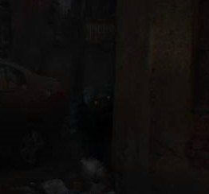

दिल्ली/गाज़ियाबाद: हाल ही में एक भयानक और रहस्यमयी प्राणी "कद कातिया" के दर्शन की घटनाओं से लोग दहशत में हैं। यह प्राणी रात 12:30 बजे से 2:30 बजे के बीच सक्रिय रहता है और विशेष रूप से 5.7 फीट से लंबे लोगों को निशाना बना रहा है। कई लोगों ने इसकी वजह से अपने पैरों में चोटें आने की शिकायतें की हैं।
सुरक्षा विशेषज्ञों का कहना है कि यह प्राणी विशेषकर रात के अंधेरे में शिकार करता है, और इसके हमलों से बचने का सबसे अच्छा तरीका इस दौरान घर में ही रहना है। खासकर ऊँचाई वाले लोगों को सतर्क रहने की आवश्यकता है।
अधिकारियों की अपील: रात 12:30 से 2:30 बजे तक बाहर न निकलें। संदिग्ध गतिविधि की सूचना तुरंत स्थानीय पुलिस को दें।